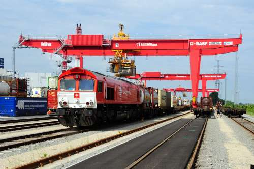

FLETES
FLETE TERRESTRE Y SUS RUTAS
El flete terrestre por carretera varía en función de una serie de condiciones como: la distancia, el tipo de unidad, el tamaño y peso del envío, la infraestructura, la densidad del tráfico, el combustible y gastos adicionales como casetas u operadores dobles. Este medio de transporte tiene gran flexibilidad de rutas, puede llegar a diversos puntos que a través de otros medios resultaría imposible y es prácticamente usado en todo el territorio nacional sin restricción alguna, siempre y cuando se cumpla con la legislación vigente.
FLETE FERROVIARIO Y SUS RUTAS
Para la fijación de tarifas para el transporte por tren, se toman en cuenta los siguientes factores: peso, volumen, kilómetros a recorrer, tipo de mercancía, urgencia de la entrega, valor y tipo de embalaje.Las bases para la aplicación de la tarifa son:
a) Tarifa general de carga, que agrupa los productos en cinco diferentes clases; siendo la quinta la más baja tarifa.
b) Aplicación con base en la distancia, las cuotas se aplican en distancias de 10 km, elevándose la fracción de cinco en adelante a la siguiente decena superior y las menores a cinco no se toman en cuenta.
c) Aplicación en base al peso, las cuotas se aplicarán de 10 kgs. y las fracciones menores a esa cantidad no se consideran.
d) Servicios gravados con cargos adicionales, como químicos o perecederos.
FLETE FERROVIARIO Y SUS RUTAS
Para la operación del servicio de trenes se cuenta con múltiples terminales en cada región y país; se desprenden diferentes rutas.
FLETE MARÍTIMO Y SUS RUTAS
Para este tipo de flete, en la tarifa básica se contempla la ruta, países y puertos contenidos dentro de ésta, líneas que participan, reglas y bases para la aplicación de la
tarifa, la clase de producto y si de trata de un producto especial. En el caso de los recargo se contemplan por congestionamiento portuario, ajustes cambiaros, precios de combustible, inseguridad en los puertos, pesos o largo excesivo y recargos gubernamentales. Dentro de los servicios de línea en el tráfico marítimo, se manejan rutas en las que prácticamente todo el mundo es unido por este servicio y por mencionar las más importantes tenemos:
a) Lejano Oriente - Estados Unidos - México; servicio de contenedores que sale aproximadamente cada 10 días.
b) Norte de Europa - Estados Unidos - México; servicio con buques de propósito múltiple.
c) Mediterráneo – Estados Unidos – México; serviciomediante buques de propósito múltiple.

FLETE AÉREO Y RUTAS
Las tarifas internacionales aéreas se establecen en dólares o en la moneda local, ya sea del país e origen o de destino. La base tarifaria es el kilo o la libra, dependiendo de la información que proporcione el embarcador en su lista de embarque. Todos los fletes se calcularán sobre el preso bruto de la mercancía o su equivalente volumen del embarque (factor peso/volumen), considerando el que resulte más alto.
Entre los conceptos más importantes podremos encontrar: tarifas mínimas, tarifas de carga general, tarifas específicas de comodidad, tarifas promocionales, tarifas para contenedores y tarifas clasificadas. El tráfico aéreo no tiene limitante de rutas, ya que se podrá cargar a cualquier aeropuerto con vuelos comerciales; aunque si existen vuelos cargueros exclusivamente destinados a la carga de mercancía y que son regularmente transcontinentales.
|